theme.css, then aan-gen11-theme.css, then aan-gen11-components.css. None of your own files change.aan-gen11-components.css, for example aria-current="page" on the current top-nav group.<html data-theme="dark"> switches both layers.ui-* markup with the Gen 11 layers appliedhandoff/rules-and-backend.html
The ten Gen 11 screens, in order of precedence: when two pages disagree, the earlier one wins. Add #dark to any address for the dark theme. Source: pages/ on GitHub.
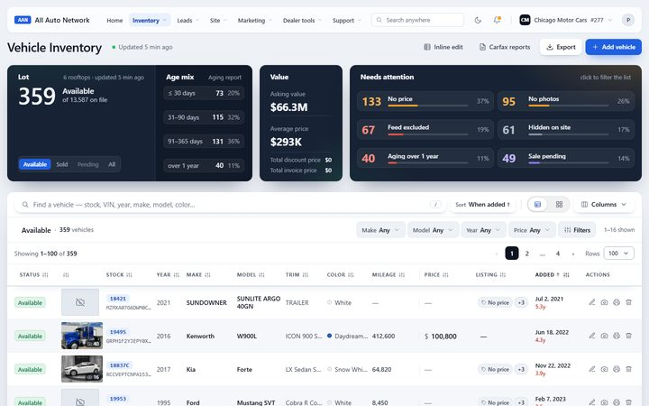
01All VehiclesDealer · list, the origin of the system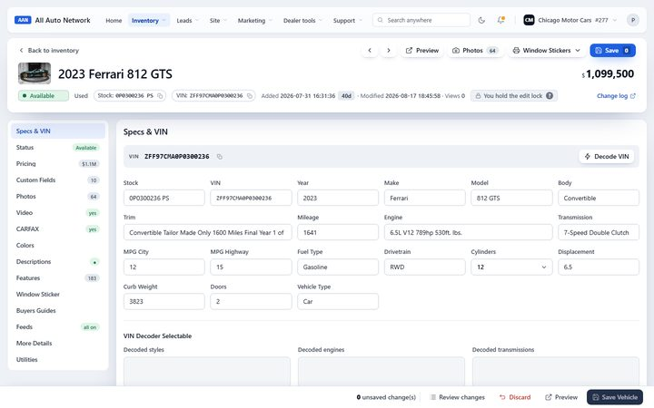
02Single VehicleDealer · edit form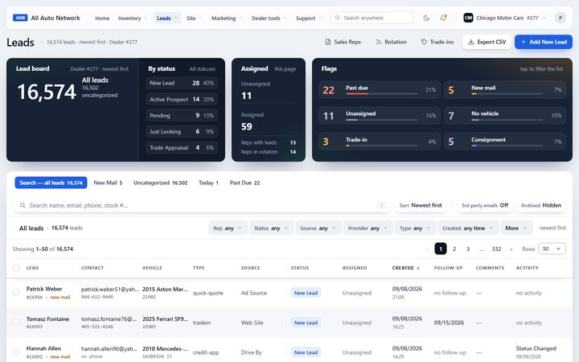
03All LeadsDealer · list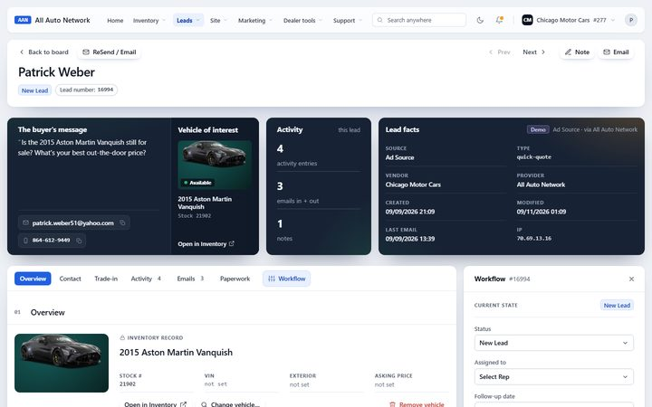
04Single LeadDealer · record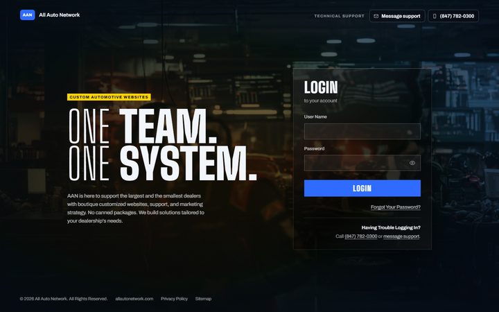
05Dealer LoginDealer · sign-in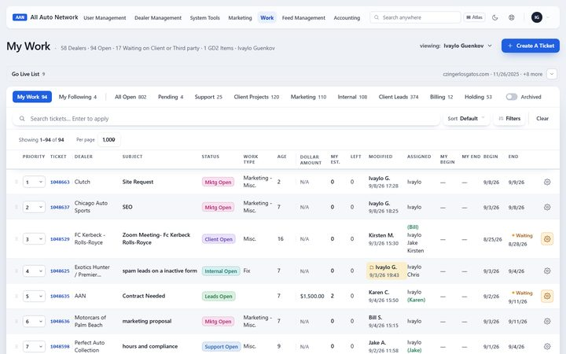
06My Work QueueStaff · list with lanes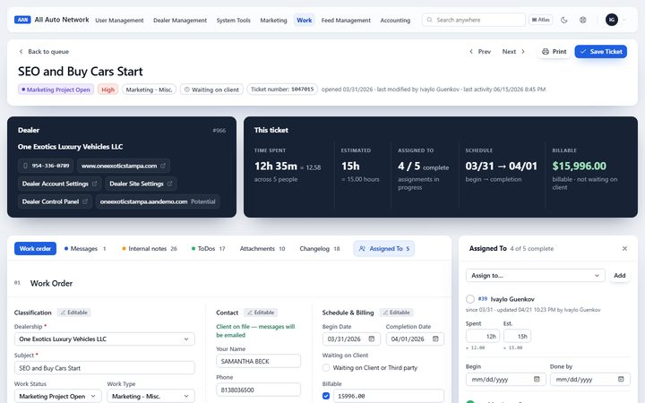
07Single TicketStaff · record with feed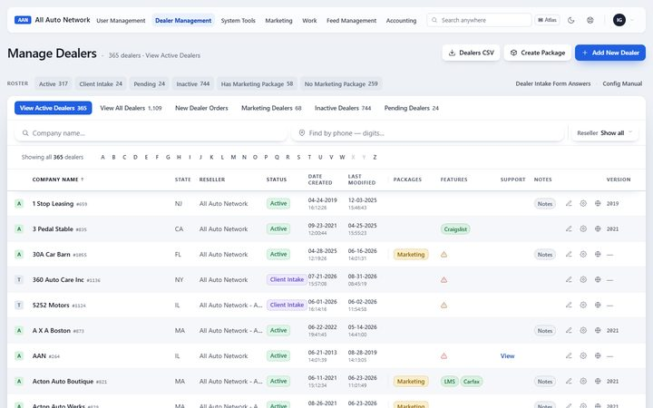
08Manage DealersStaff · list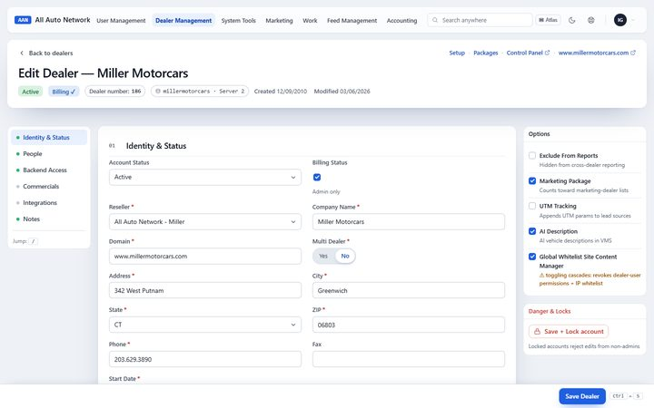
09Dealer EditStaff · long edit form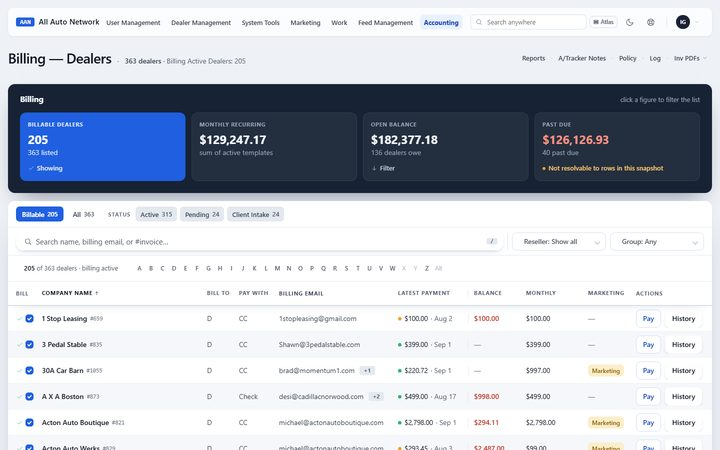
10AccountingStaff · board and listSeven screens of the new backend, redrawn from the design system alone, with data read from the backend. They show how the page types carry screens nobody drew.
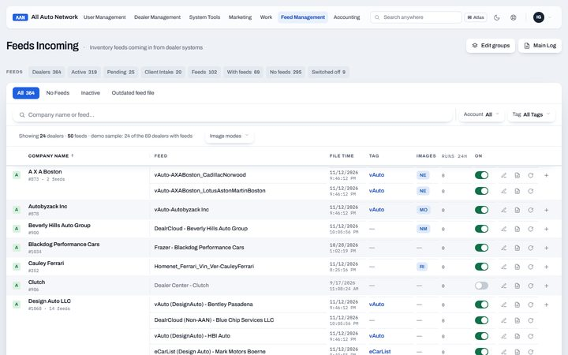
Feeds IncomingList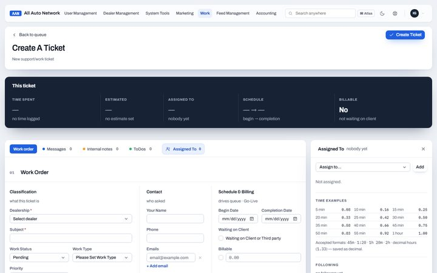
Create A TicketForm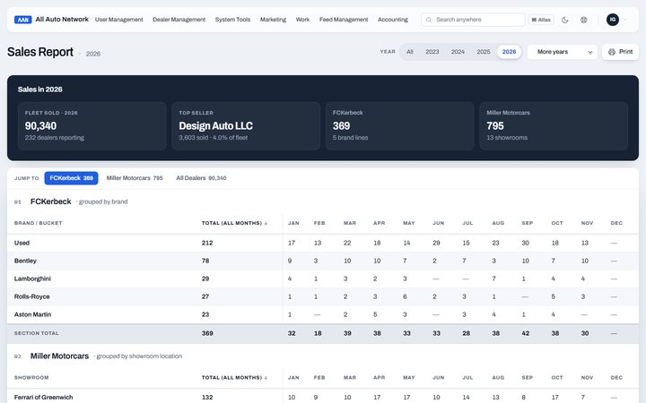
Sales ReportBoard and wide tables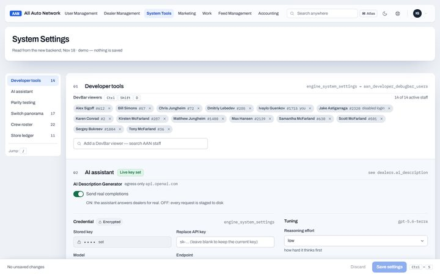
System SettingsLong edit form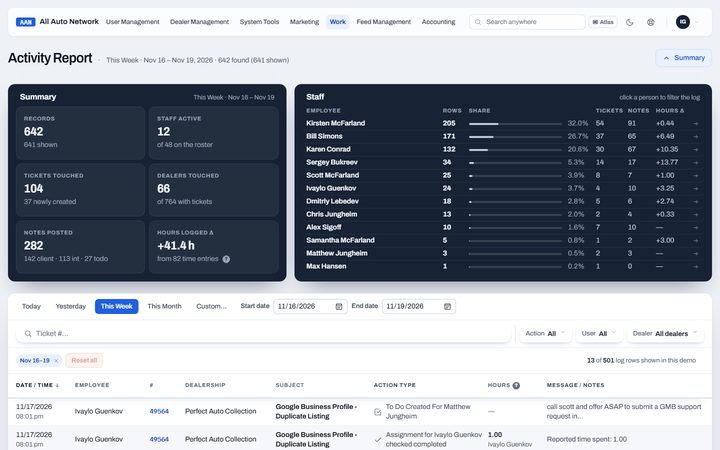
Activity ReportBoard, staff table and log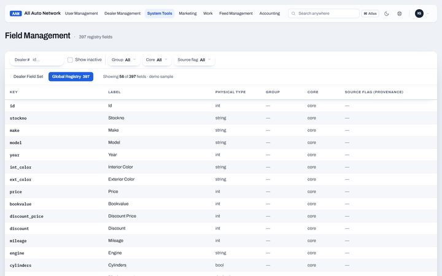
Field ManagementTwo modes over one registry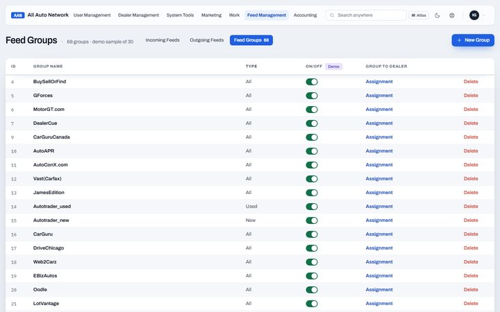
Feed GroupsList and the group editor (New Group)Not references.Use them as worked examples of the page types. Take values from the reference pages, not from these. Their data is a partial sample, with the real totals kept.
aan-gen11-components.css exists in the backend (checked 20 Nov). Nine were seen only in the backend's styleguide or its CSS, not on a loaded screen; the file's header lists them. Look at those on screen when a page first uses them.